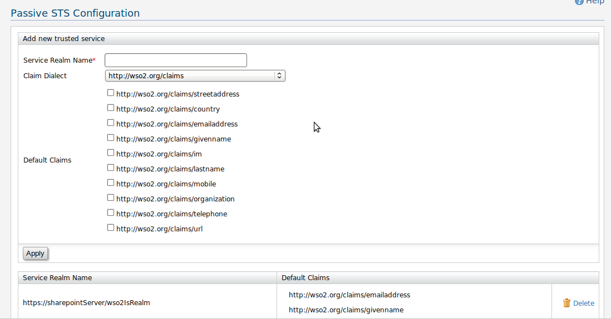

In the passive sts configuration, we can define the claims to be added for authentication response. The realm name should be equal to the wtrealm or wreply parameter as defined in ws passive federation specification. The user claims can be from any claim dialect. The claim uri is used to name the claims in the response element. Before requesting for passive sts for tokens, you need to register the realm name. These realms can be deleted in below table.

Figure 1: Passive sts configuration
External References: